Más de una década de experiencia en mantenimiento industrial
Misión
Desarrollar y ejecutar soluciones tecnológicas y servicios especializados para la gran industria, aportando conocimiento técnico, alta capacidad de respuesta y estándares de excelencia que garanticen la continuidad operacional y la creación de valor para nuestros clientes.
Visión
Ser un referente nacional en soluciones tecnológicas, productos y servicios especializados, aportando valor a los sectores Oil & gas, energía, minería e industria.
Ingenieros y técnicos certificados en terreno
El equipo MTEC combina trayectoria en plantas industriales con actualización técnica permanente. Operamos con protocolos de seguridad estrictos y estándares de excelencia en cada intervención.
El respaldo de un grupo industrial consolidado

"El peso de una empresa con trayectoria comprobada, con la agilidad de una organización especializada."
MTEC opera como empresa autónoma dentro del ecosistema ERRES SpA, heredando décadas de experiencia en la industria chilena. Esta relación nos otorga acceso a redes técnicas, capacidades ampliadas y el respaldo institucional que los grandes operadores exigen de sus socios estratégicos.